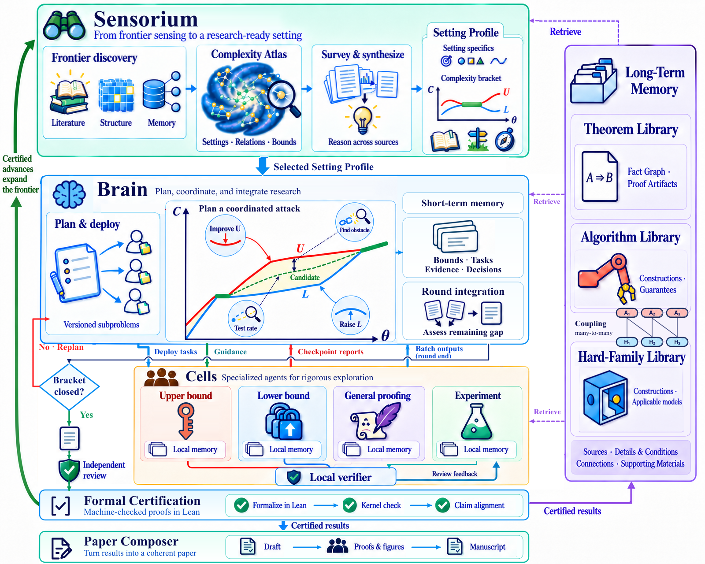

An AI research agent translates reviewed optimization-complexity proofs into Lean, checks them with the Lean kernel under a pinned toolchain, and certifies results.
Abstract
Science advances from frontier to frontier as discoveries reshape what is known and create the basis for further discovery. We present Colombo, a self-organizing AI researcher that drives this renewal, first instantiated in oracle-based optimization. Here, the central question is how efficiently a problem class can be solved through a prescribed information interface and what costs no admissible algorithm can avoid. The gap between achievable guarantees and unavoidable limits defines the frontier recorded in its Complexity Atlas, a living map of frontier settings and the current state of knowledge. Self-Organization turns unresolved gaps into adaptive research programmes, coordinating conjecture formation, mathematical investigation, and replanning as evidence accumulates. Adversarial Co-Ascent develops algorithms and hard families through reciprocal challenge, exposing mechanisms of information use and concealment that guide stronger methods and proofs of unavoidable costs. Independent review and Lean-based formal certification check mathematical claims, while the Long-Term Memory carries supported findings and research experience across settings. To date, Colombo has established optimal or near-optimal rates for more than fifty settings in the Atlas. Colombo thus takes a concrete step toward Autopoietic Science: a scientific process whose validated advances regenerate the conditions of its own progress, continually reshaping how inquiry is organized and what it can discover.
Problem
Autonomous AI research systems handle individual investigations well but struggle to track a field's evolving frontier and direct sustained research across it. Oracle-based optimization is the first test domain. There the frontier is the gap between achievable complexity upper bounds and unavoidable lower bounds across many settings.
Approach
Colombo keeps a Complexity Atlas of settings and their upper/lower bound brackets. A planning Brain turns open gaps into subproblems for Research Cells, and Adversarial Co-Ascent co-develops algorithms and hard instance families. Candidate results go through independent review and then Formal Certification. Certification translates the arguments into modular Lean proof obligations, checks them with the Lean kernel, and accounts explicitly for axioms. Certified results update the Atlas and Long-Term Memory, and a Paper Composer writes papers from the verified Lean proofs.

Figure 2 : Architecture of Colombo . The Sensorium prepares a selected Setting Profile; the Brain plans and coordinates specialized Cells, integrates their findings, and replans around the remaining complexity gap. Independent review and Lean-based formal certification validate results, which enrich Long-Term Memory, support paper composition, and renew the frontier.
Results
The system, run on GPT-5.6 Sol, reports optimal or near-optimal rates for more than fifty settings. These span 56 research works across single-objective, bilevel, minimax, variational inequality, matrix computation, and bandit problems. They include new lower bounds in zeroth-order optimization.
Task
0th
1st
2nd+
Special
Total
Single-Objective Optimization
10
17
8
1
34
Minimax & Saddle-Point
–
6
2
1
9
Online Learning & Bandit
4
1
–
1
6
Total (all tasks)
16
24
12
4
56
Research works grouped by task and primary oracle type